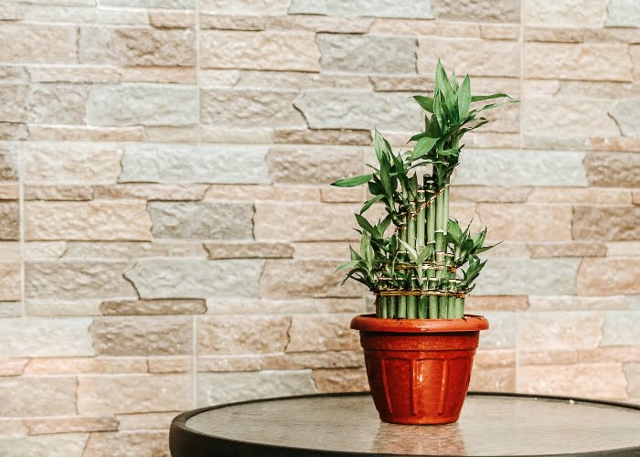

Bambu da sorte
O bambu-da-sorte (Dracaena sanderiana), também conhecido como "bambu-da-sorte" ou "bambu da felicidade", é uma planta ornamental popular que não é um verdadeiro bambu, mas pertence à família das dracenas. Nativa da África Central e Ocidental, essa planta é conhecida por sua aparência elegante, com caules longos e eretos, geralmente verde-claros, que podem crescer em alturas variáveis.
As folhas do bambu-da-sorte são longas, estreitas e pontiagudas, crescendo em espiral no topo dos caules. A planta é frequentemente cultivada em arranjos aquáticos, onde seus caules são colocados em vasos com água, mas também pode ser cultivada em solo. Acredita-se que o bambu-da-sorte traga sorte e prosperidade, sendo uma planta popular em práticas de Feng Shui.
Em termos de cuidados, o bambu-da-sorte é relativamente fácil de manter. Ele prefere luz indireta e pode se adaptar a diferentes condições de luz, embora evite luz solar direta, que pode queimar suas folhas. A planta deve ser mantida em ambientes úmidos, e a água deve ser trocada regularmente se cultivada em arranjos aquáticos. Além de seu simbolismo positivo, o bambu-da-sorte também é valorizado por sua capacidade de purificar o ar, tornando-se uma excelente adição a ambientes internos.